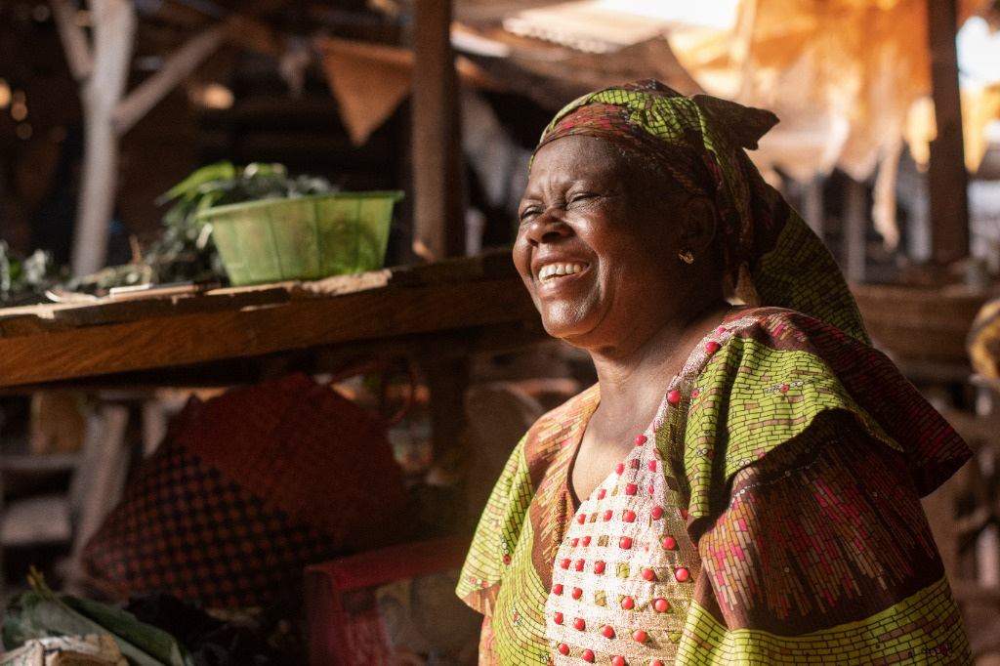

Scaling Regenerative Soil Systems Across Northern Agricultural Corridors
How bio-innovations, indigenous compost amendments, and microbial soil testing are revitalizing farmlands while raising smallholder yields.
Growth Innovation for Development Action
GIDA builds inclusive rural market systems, green infrastructure, community health, and gender-transformative leadership, so rural households move from subsistence to sustained, locally-owned prosperity.

What "Where People Prosper" means
GIDA defines prosperity holistically, as equitable economic wealth, physical and biological health, social dignity, and environmental resilience, working together rather than in isolation.
Transitioning rural households, smallholders and off-farm NMSMEs from subsistence to profitable, market-led enterprises.
Ensuring access to bio-safe food systems, clean water, microbial soil health, and nutrition-sensitive value chains.
Constructing low-cost bioclimatic green processing hubs, clean-energy cold storage, and eco-friendly community spaces.
Dismantling structural power imbalances so women, youth, and persons differently abled lead, govern, and thrive.
Target Impact 2026–2030
Rural households with increased economic resilience & diversified income
Female and youth representation across GIDA-supported enterprises & boards
Climate-friendly, low-cost green processing hubs & cool-storage facilities
Communities benefiting from improved water microbiology & One Health interventions
Alongside US$20 Million+ in private-sector capital and institutional donor funding targeted for rural development.
2026–2030 strategic pillars
News & Insights

How bio-innovations, indigenous compost amendments, and microbial soil testing are revitalizing farmlands while raising smallholder yields.

Deploying 100% solar-powered decentralized cold storage units managed exclusively by female cooperative clusters in rural aggregation centers.
Institutional Repository
Access our multi-year strategic frameworks, safeguarding policy mandates, One Health guidelines, and field assessments.
Five-pillar strategic blueprint detailing our multi-year interventions across rural market systems, renewable infrastructure, and planetary health.
Institutional zero-tolerance standards, survivor-centered protocols, community reporting mechanisms, and contractual escalation timelines.
Standard operational procedures for water microbiological testing, post-harvest mycotoxin assays, and community zoonotic disease surveillance.